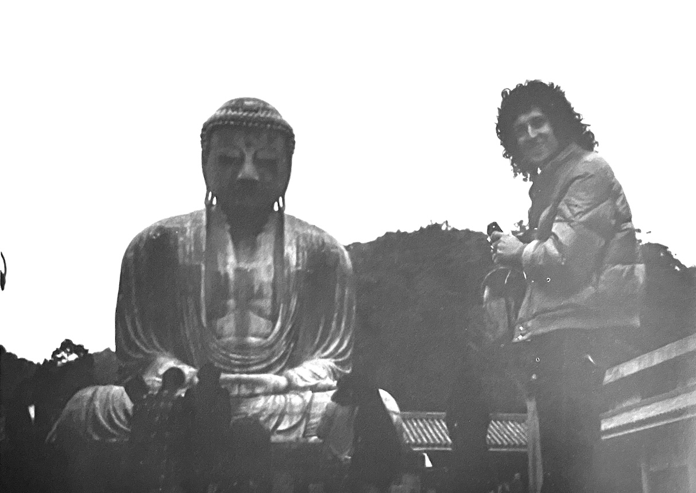
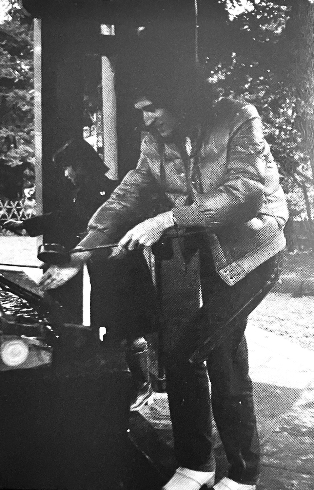
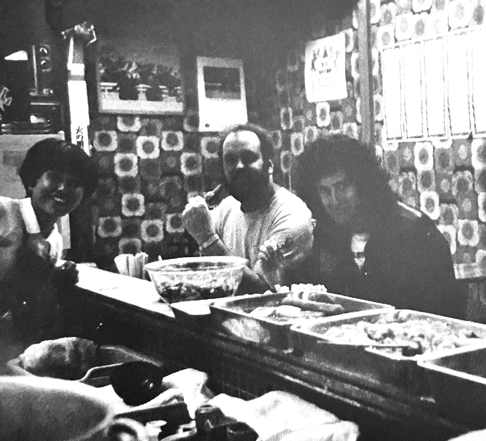
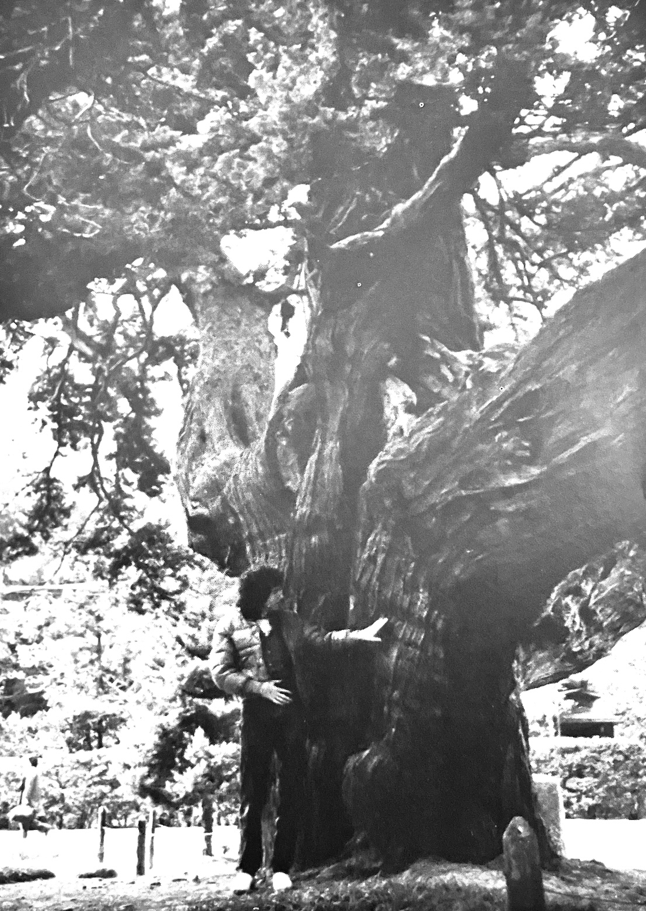

Brian's Japanese Vacation
A Trip to Kamakura and Asakusa


Next, he visited Kamakura. Brian, a man who is well-known for his gentle, pensive nature, seemed to have fallen in love completely with the tranquil, magnificent forms of Kamakura's architecture. He strolled through the greenery from Kita-Kamakura to Kamakura proper, camera in hand. At the Taiko Bridge in Tsurugaoka Hachimangu Shrine, he said resolutely "This should be easy to cross!" But he struggled to make it across in his clogs. "This is harder than I thought," he said, but he did manage to do it. On the way back, he stopped into a record store to look for Queen vinyls and bought some early releases that are hard to find now in England.
Although it was a hectic sightseeing trip with limited time, it seems to have been a fulfilling and enjoyable holiday for Brian, who is quite fond of Japan!

&bsnp;&bsnp;&bsnp;